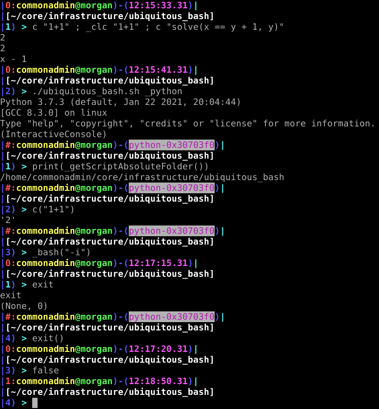

#
TODO
*) Interpreter prompt.

Similar for 'ghci' Haskell interpreter desired (to install with '_setupUbiquitous' to either '.ghci' or a hook there to include another file in '.ubcorerc').
+) Environment variables - scriptAbsoluteFolder .
Haskell programs will need 'scriptAbsoluteFolder' or similar to include Haskell files in adjacent directories, even from the 'ghci' interpreter.
System.Environment.getEnv "scriptAbsoluteFolder"
*) Shell commands with Haskell variables or at least environment variables.
Several commands apparently do not work as might be expected.
scriptAbsoluteFolder=System.Environment.getEnv "scriptAbsoluteFolder"
scriptAbsoluteFolder
:cd scriptAbsoluteFolder
:! cd scriptAbsoluteFolder
Must not fail due to misquoting of spaces or other possible characters in filenames.
*) Run haskell programs from files in directory relative to a script in a related directory.
:load scriptAbsoluteFolder /_example/Main
Environment Variables
System.Directory.getCurrentDirectory
System.Environment.getEnv "scriptAbsoluteFolder"
:cd dir
:load _example/Main
Dependencies
if [[ -e /etc/issue ]] && cat /etc/issue | grep 'Debian' > /dev/null 2>&1
then
_wantGetDep '/usr/share/doc/haskell-platform/README.Debian'
fi
_wantGetDep alex
_wantGetDep cabal
_wantGetDep happy
_wantGetDep HsColour
_wantGetDep hscolour
_wantGetDep ghc
_wantGetDep ghci
! type -p 'ghc' && echo 'warn: missing: ghci'
! type -p 'ghci' && echo 'warn: missing: ghci'
_tryExec "_test_haskell"
Reference
https://downloads.haskell.org/~ghc/7.4.1/docs/html/users_guide/loading-source-files.html
'Prelude> :cd dir'
System.Directory.getCurrentDirectory
'save Main.hs'
https://wiki.haskell.org/GHCi_in_colour
https://stackoverflow.com/questions/11250262/how-to-see-the-current-working-directory-in-winghci
'System.Directory.getCurrentDirectory'
'A poor man's solution to set the ghci prompt to the current working directory would be putting'
'let cur fill = do { cwd <- System.Directory.getCurrentDirectory; return (":set prompt \"" ++ cwd ++ fill ++ " \""); }
:def doprompt (\_ -> cur ">")
:def mycd (\dir -> System.Directory.setCurrentDirectory dir >> cur ">")
:doprompt'
'.ghci
':! allows shell commands'
https://downloads.haskell.org/~ghc/5.04.1/docs/html/users_guide/ghci.html
https://stackoverflow.com/questions/42311688/haskell-cant-load-a-file-in-ghci-changeworkingdirectory-does-not-exist
'ghci -ignore-dot-ghci'
https://hackage.haskell.org/package/base-4.16.0.0/docs/System-Environment.html
'getEnv'
... "$scriptAbsoluteFolder"
exec(open(os.environ['scriptAbsoluteFolder']+'/lean.py').read())
https://gitlab.haskell.org/ghc/ghc/-/issues/10920